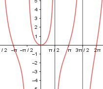

Aufgabe 188 f(x) = x * tan x x im Bogenmaß sin x f(x) = x * ------- cos x Erste Ableitung: Produkt-, Quotientenregel u = x, u' = 1 sin x v = ------- cos x a = sin x, a' = cos x b = cos x, b' = -sin x cos x * cos x – (-sin x * sin x) v' = - --------------------------------- cos2 x cos2 x + sin2 x 1 v' = ----------------- = -------- cos2 x cos2 x sin x (x * -------)' cos x u = x, u' = 1 sin x 1 v = -------, v' = -------- cos x cos2 x sin x 1 f'(x) = 1 * ------- + x * ------- cos x cos2 x cos x * sin x + x f'(x)= -------------------- cos2 x Zweite Ableitung: Summen-, Produkt-, Quotienten- und Kettenregel (cos x * sin x)' = u = cos x, u' = -sin x v = sin x, v' = cos x = -sin x * sin x + cos x * cos x = -sin2 x + cos2 x cos x * sin x + x (--------------------)′ = cos2 x u = cos x * sin x + x, uꞌ = -sin2 x + cos2 x + 1 v = cos2 x, vꞌ = 2 * cos x * -sin x (-sin2 x + cos2 x + 1) * cos2 x = ---------------------------------- - cos4 x (2 * cos x * -sin x) * (cos x * sin x + x) - -------------------------------------------- cos4 x cos4 x - sin2 x * cos2 x + cos2 x = ------------------------------------ + cos4 x 2 sin2 x * cos2 x + 2x * sin x * cos x + ---------------------------------------- cos4 x cos4 x + sin2 x * cos2 x + cos2 x = ------------------------------------ + cos4 x 2x * sin x * cos x + -------------------- cos4 x cos4 x + cos2 x * (1 – cos2 x) = --------------------------------- + cos4 x cos2 x + 2x * sin x * cos x + ----------------------------- cos4 x 2cos2 x + 2x * sin x * cos x = -------------------------------- = cos4 x cos x * (2cos x + 2x *sin x) = ------------------------------ cos4 x 2cos x + 2x * sin x f''(x) = ----------------------- cos3 x Zur Beurteilung, ob f'''(x) ≠ 0: u = cos x + x *sin x u' = -sin x + (x *sin x)ꞌ (x * sin x)ꞌ = u = x, uꞌ = 1 v = sin x, vꞌ = cos x u' 2(-sin x + sin x + x * cos x) 2x --- = ------------------------------- = -------- v cos3 x cos2 x 3 --> ist ≠ 0 für alle x ≠ π/2, ---2π 2 Polstelle: cos x = 0 3 x = π/2, ---π 2 Symmetrie zur y-Achse bzw. zum Punkt (0|0): f(-x) = -x * tan (-x) = -x * -tan (x) f(-x) = x * tan x = f(x) --> Achsensymmetrie -f(-x) = -x * tan x ≠ f(x) --> keine Punktsymmetrie Wertebereich: -∞ < f(x) < ∞ Schnittpunkt mit der y-Achse: x = 0 sin 0 0 f(0) = 0 * ------- = --- = 0 cos 0 1 Sy(0|0) Definitionsbereich: 0 ≤ x ≤ 2π x ≠ π/2, 3π/2 Nullstellen: f(x) = 0 x * tan (x) = 0 x = 0 tan x = 0 --> x = 0, π, 2π N1(0|0), N2(π|0), N3(2π|0) Extrempunkte: f'(x) = 0 cos x * sin x + x -------------------- = 0 |*cos2 x cos2 x cos x * sin x + x = 0 für x = 0 --> f(0) = 0 2(cos 0 + 0 * sin 0) fꞌꞌ(0) = ---------------------- cos3 (x) 2(1 + 0 * 0) fꞌꞌ(0) = -------------- = 2 > 0 1 --> Tiefpunkt (0|0) Wendepunkte: f''(x) = 0 2(cos x + x * sin x) ---------------------- = 0 |*cos3 x cos3 x 2(cos x + x * sin x) = 0 |:2 cos x + x * sin x = 0 |:sin x cos x -------- + x = 0 sin x x + cot x = 0 1 (x + cot x)' = 1 - -------- sin2 x Newton-Näherungsverfahren: Wertetabelle: x 2,7 2,8 6,1 6,2 x+cot x 2,83 -0,012 0,7 -5,79 Startwert: x = 2,7 2,7 + cot 2,7 1. 2,7 - ---------------- = 1 1 - ---------- sin2 2,7 0,5846 = 2,7 - --------- = 2,8306 -4,4748 2,8306 + cot 2,8306 2. 2,8306 - ---------------------- = 1 1 - -------------- sin2 2,8306 -0,2806 = 2,8306 - ---------- = 2,8016 -9,679 . . . Nach der 5. Wiederholung: x = 2,7984 f(2,7984) = 2,7984 * tan 2,7984 = -1 --> WP1(2,7984|-1) Startwert: x = 6,1 6,1 + cot 6,1 1. 6,1 - ----------------- = 1 - ---------- sin2 6,1 0,7022 = 6,1 - --------- = 6,124 -29,136 6,124 + cot 6,124 2. 6,124 - --------------------- = 1 1 - -------------- sin2 6,124 - 0,1048 = 6,124 - ----------- = 6,1213 -38,798 f(6,1213) = 6,1213 * tan 6,1213 = -1 --> WP2(6,1213|-1) Graph:
